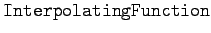

Inhalt Index DeskTop Bronstein

 Numerische Mathematik Nutzung von Computern Anwendung von Computeralgebrasystemen Mathematica
Numerische Mathematik Nutzung von Computern Anwendung von Computeralgebrasystemen Mathematica


Bei der numerischen Lösung von gewöhnlichen Differentialgleichungen oder auch von Systemen von Differentialgleichungen stellt Mathematica die Ergebnisse mittels eines - Objektes dar. Die gestattet den Wert der numerischen Lösung an beliebigen Punkten im gegebenen Intervall zu bestimmen oder aber auch die Lösungskurve zu zeichnen. Die gebräuchlichsten Anweisungen sind in der folgenden Tabelle dargestellt.
| liefert eine numerische Lösung der Differentialgleichung im Bereich zwischen xa und xe |
|
| gibt die Lösung im Punkt x | |
| zeichnet die Lösung |
| Beispiel |
|
Lösung der Differentialgleichungen für die Bewegung eines schweren Körpers in einem Medium mit Reibung. Im Zweidimensionalen lauten die Bewegungsgleichungen {x,y}, {t,15}]
|
 akzeptiert eine Reihe von Optionen, die die Genauigkeit der Resultate beeinflussen.
akzeptiert eine Reihe von Optionen, die die Genauigkeit der Resultate beeinflussen.
Mit kann die Genauigkeit für die Berechnung der numerischen Lösungen vorgegeben werden. Entsprechendes gilt für . Bei der internen Abarbeitung richtet sich Mathematica jedoch nach der sogenannten , diese sollte bei erhöhter Genauigkeit noch um weitere 5 Einheiten erhöht werden.
Die Anzahl der Schritte, mit denen Mathematica den geforderten Bereich bearbeitet, ist auf 500 voreingestellt. Im allgemeinen wird Mathematica in der Nähe von problematischen Bereichen adaptiv die Zahl der Stützpunkte erhöhen. Dies kann in der Umgebung von Singularitäten jedoch zur Erschöpfung der Schrittreserven führen. In solchen Fällen ist es möglich, mit größere Schrittzahlen vorzugeben. Die Einstellung  für ist möglich.
für ist möglich.